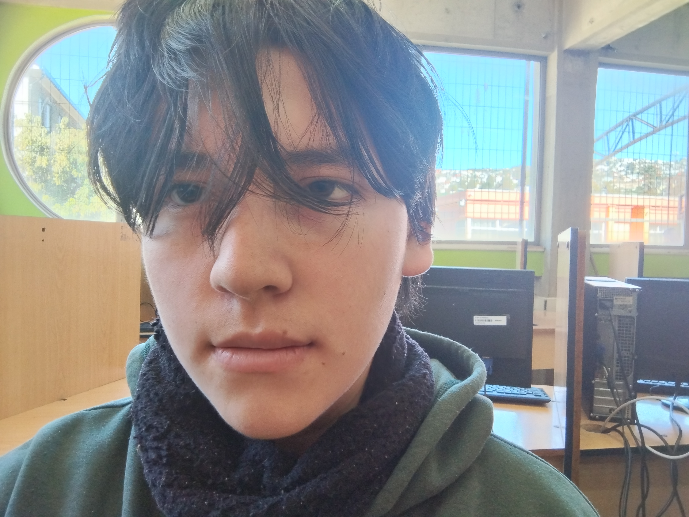

Martín Lobos
Estudiante de Programación¡Hola! Soy Martín Lobos, estudiante de programación de Cuarto Medio. Desarrollamos este proyecto de la plataforma de laboratorios para el Instituto Superior de Comercio (INSUCO), con el fin de ofrecer una interfaz accesible y moderna para el acceso a las guías y contenidos prácticos.
Juan Espinoza
Estudiante de Programación¡Hola! Me llamo Juan Espinoza, estudiante de la carrera de programación de Cuarto Medio, del Instituto Superior de Comercio (INSUCO). Yo y mi compañero desarrollamos este proyecto con el fin de dar información de los laboratorios del Insuco Superior de Comercio en el que estudiamos